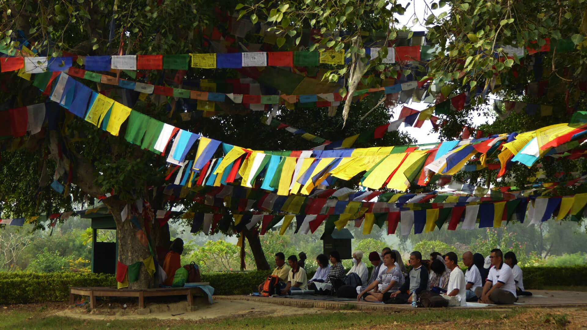

Lumbini, located in the Rupandehi district of Nepal, is the birthplace of Siddhartha Gautama, who later became the Buddha. It is a UNESCO World Heritage Site, attracting millions of visitors for its serene environment and spiritual significance.
The central shrine marking the birthplace of Buddha.
A serene pagoda symbolizing peace and unity.
Built by Emperor Ashoka in 249 BC to mark this sacred place.
A collection of monasteries built by Buddhist communities worldwide.
Lumbini is not just a place; it’s an experience. From tranquil gardens to architectural marvels, it embodies the essence of Buddhist culture. Experience meditation, local festivals, and the spirit of peace and compassion.
